Bernoulli Factory Algorithms
Introduction
This page catalogs algorithms to turn coins biased one way into coins biased another way, also known as Bernoulli factories. Many of them were suggested in (Flajolet et al., 2010)(1), but without step-by-step instructions in many cases. This page provides these instructions to help programmers implement the Bernoulli factories they describe. The Python sample code includes implementations of several Bernoulli factories.
This page also contains algorithms to exactly simulate probabilities that are irrational numbers, using only random bits, which is likewise related to the Bernoulli factory problem. Again, many of these were suggested in (Flajolet et al., 2010)(1).
About This Document
This is an open-source document; for an updated version, see the source code or its rendering on GitHub. You can send comments on this document on the GitHub issues page. You are welcome to suggest additional Bernoulli factory algorithms, especially specific continued fraction expansions and series expansions for the general martingale and Mendo algorithms below.
Contents
- Introduction
- Contents
- About Bernoulli Factories
- Algorithms
- Algorithms for Functions of λ
- exp(−λ)
- exp(λ)*(1−λ)
- exp(−λ − c)
- 1/(1+λ)
- log(1+λ)
- 1 − log(1+λ)
- c * λ * β / (β * (c * λ + d * μ) − (β − 1) * (c + d))
- c * λ / (c * λ + d) or (c/d) * λ / (1 + (c/d) * λ))
- λ + μ
- λ − μ
- 1/(c + λ)
- 1 − λ
- ν * λ + (1 − ν) * μ
- λ + μ − (λ * μ)
- (λ + μ) / 2
- arctan(λ) /λ
- arctan(λ)
- λx/y
- λμ
- sqrt(λ)
- arcsin(λ) + sqrt(1 − λ2) − 1
- arcsin(λ) / 2
- λ * μ
- λ * x/y (linear Bernoulli factories)
- (λ * x/y)i
- ϵ / λ
- Certain Power Series
- Algorithms for Irrational Constants
- General Algorithms
- Algorithms for Functions of λ
- Correctness and Performance Charts
- Notes
- Appendix
- License
About Bernoulli Factories
A Bernoulli factory (Keane and O'Brien 1994)(2) is an algorithm that takes an input coin (a method that returns 1, or heads, with an unknown probability, or 0, or tails, otherwise) and returns 0 or 1 with a probability that depends on the input coin's probability of heads. For example, a Bernoulli factory algorithm can take a coin that returns heads with probability λ and produce a coin that returns heads with probability exp(−λ).
A factory function is a function that relates the old probability to the new one. Its domain is [0, 1] and returns a probability in [0, 1]. There are certain requirements for factory functions. As shown by Keane and O'Brien (1994)(2), a function f can serve as a factory function if and only if f, in the interval [0, 1]—
- is continuous everywhere, and
- either returns a constant value in [0, 1] everywhere, or returns a value in [0, 1] at each of the points 0 and 1 and a value in (0, 1) at each other point.
As one example, the function f = 2*p cannot serve as a factory function, since its graph touches 1 somewhere in the open interval (0, 1).
The next section will show algorithms for a number of factory functions, allowing different kinds of probabilities to be simulated from input coins.
Algorithms
In the following algorithms:
- λ is the unknown probability of heads of the input coin.
- The SampleGeometricBag and URandLess algorithms are described in my article on partially-sampled random numbers (PSRNs).
- The
ZeroOrOnemethod should be implemented as shown in my article on random sampling methods. - The instruction to "generate a uniform random number" can be implemented by creating an empty uniform PSRN (most accurate) or by generating
RNDEXCRANGE(0, 1)orRNDINT(1000)(less accurate). - Where an algorithm says "if a is less than b", where a and b are uniform random numbers, it means to run the URandLess algorithm on the two PSRNs, or do a less-than operation on a and b, as appropriate.
- For best results, the algorithms should be implemented using exact rational arithmetic (such as
Fractionin Python orRationalin Ruby).
Performance notes:
The algorithms as described here do not always lead to the best performance. An implementation may change these algorithms as long as they produce the same results as the algorithms as described here. Some algorithms are described as "uniformly fast". This means that their average running time is bounded from above for all choices of λ and other parameters (Devroye 1986, esp. p. 717)(3).
An algorithm can be uniformly fast for all λ parameters in a closed interval in (0, 1) only if its factory function meets the Lipschitz condition on that closed interval, that is, it is continuous and has no slope that tends to a vertical slope anywhere in that interval (Nacu and Peres 2005, proposition 23)(4).
Note on "non-randomized" algorithms:
A non-randomized algorithm is a simulation algorithm that uses nothing but the input coin as a source of randomness (in contrast to randomized algorithms, which do use other sources of randomness) (Mendo 2019)(5). Instead of generating outside randomness, a randomized algorithm can implement a randomness extraction procedure (such as the von Neumann algorithm) to generate that randomness using the input coins themselves. In this way, the algorithm becomes a non-randomized algorithm. For example, if an algorithm implements the two-coin special case (below) by generating a random bit in step 1, it could replace generating that bit with flipping the input coin twice until the coin returns 0 then 1 or 1 then 0 this way, then taking the result as 0 or 1, respectively (von Neumann 1951)(6).
Algorithms for Functions of λ
exp(−λ)
The algorithm in (Flajolet et al., 2010)(1) calls for generating a Poisson(λ) random number and returning 1 if that number is 0, or 0 otherwise. The Poisson generator in turn involves generating a geometric(λ) random number G(7), then G uniform random numbers, then returning G only if all G uniform numbers are sorted.(8) The algorithm follows.
- Flip the input coin until the coin returns 0. Then set G to the number of times the coin returns 1 this way.
- If G is 0, return 1.
- Generate a uniform random number w, and set i to 1.
- While i is less than G:
- Generate a uniform random number U.
- If w is less than U, break out of this loop and go to step 1.
- Add 1 to i, and set w to U.
- Return 0. (G is now a Poisson(λ) random number, but is other than 0.)
This algorithm, however, runs very slowly as λ approaches 1.
Here is an alternative version of the algorithm above, which doesn't generate a geometric random number at the outset.
- Set k and w each to 0.
- Flip the input coin. If the coin returns 0 and k is 0, return 1. Otherwise, if the coin returns 0, return 0.
- Generate a uniform random number U.
- If k > 0 and w is less than U, go to step 1.
- Set w to U, add 1 to k, and go to step 2.
In turn, this algorithm likewise converges very slowly as λ approaches 1.
A third algorithm is uniformly fast everywhere in (0, 1). It uses the reverse-time martingale approach for alternating series in (Łatuszyński et al. 2009/2011)(9) and makes use of the fact that exp(−λ) can be rewritten as 1 − λ + λ2/2 − λ3/6 + λ4/24 − ..., which is an alternating series whose coefficients are 1, 1, 1/(2!), 1/(3!), 1/(4!), ..., which satisfy the requirements for this approach because the coefficients are nonincreasing and all 1 or less. However, the algorithm requires a bit more arithmetic, notably rational division.
First, the general algorithm for the reverse-time martingale approach (called the general martingale algorithm) follows. It takes a list of coefficients and an input coin, and returns 1 with probability c[0] − c[1] * λ + c[2] * λ2 − ..., and 0 otherwise.
- Let c[0], c[1], etc. be the first, second, etc. coefficients of the alternating series. Set u to c[0], set w to 1, set l to 0, and set n to 1.
- Create an empty uniform PSRN.
- If w is not 0, flip the input coin and multiply w by the result of the flip.
- If n is even, set u to l + w * c[n]. Otherwise, set l to u + w * c[n].
- Run the URandLessThanFraction algorithm on the PSRN and l. If the algorithm returns 1, return 1.
- Run the URandLessThanFraction algorithm on the PSRN and u. If the algorithm returns 0, return 0.
- Add 1 to n and go to step 3.
For exp(−λ), modify that algorithm as follows for more efficiency:
- Rather than multiplying by c[n] in step 4, divide w by n in step 3 (after multiplying by the result of the flip). This is a more efficient way to take account of the factorial in the second and later coefficients.
exp(λ)*(1−λ)
(Flajolet et al., 2010)(1):
- Set k and w each to 0.
- Flip the input coin. If it returns 0, return 1.
- Generate a uniform random number U.
- If k > 0 and w is less than U, return 0.
- Set w to U, add 1 to k, and go to step 2.
exp(−λ − c)
To the best of my knowledge, I am not aware of any article or paper by others that presents this particular Bernoulli factory. In this algorithm, c is an integer that is 0 or greater.
- Run the algorithm for exp(−c/1) described later in this document. Return 0 if the algorithm returns 0.
- Return the result of the algorithm for exp(−λ).
1/(1+λ)
One algorithm is the general martingale algorithm, since when λ is in [0, 1], this function is an alternating series of the form 1 - x + x^2 - x^3 + ..., whose coefficients are 1, 1, 1, 1, .... However, this algorithm converges slowly when λ is very close to 1.
A second algorithm is the so-called "even-parity" construction of (Flajolet et al., 2010)(1). However, this algorithm too converges slowly when λ is very close to 1.
- Flip the input coin. If it returns 0, return 1.
- Flip the input coin. If it returns 0, return 0. Otherwise, go to step 1.
A third algorithm is a special case of the two-coin Bernoulli factory of (Gonçalves et al., 2017)(10) and is uniformly fast, unlike the previous two algorithms. It will be called the two-coin special case in this document.
- With probability 1/2, return 1. (For example, generate an unbiased random bit and return 1 if that bit is 1.)
- Flip the input coin. If it returns 1, return 0. Otherwise, go to step 1.
log(1+λ)
(Flajolet et al., 2010)(1):
- Create an empty uniform PSRN.
- Flip the input coin. If it returns 0, flip the coin again and return the result.
- Call the SampleGeometricBag algorithm with the PSRN. If it returns 0, flip the input coin and return the result.
- Flip the input coin. If it returns 0, return 0.
- Call the SampleGeometricBag algorithm with the PSRN. If it returns 0, return 0. Otherwise, go to step 2.
Observing that the even-parity construction used in the Flajolet paper is equivalent to the two-coin special case, which is uniformly fast for all λ parameters, the algorithm above can be made uniformly fast as follows:
- Create an empty uniform PSRN.
- With probability 1/2, flip the input coin and return the result.
- Call SampleGeometricBag on the PSRN, then flip the input coin. If the call and the flip both return 1, return 0. Otherwise, go to step 2.
1 − log(1+λ)
Invert the result of the algorithm for log(1+λ) (make it 1 if it's 0 and vice versa).(11)
c * λ * β / (β * (c * λ + d * μ) − (β − 1) * (c + d))
This is the general two-coin algorithm of (Gonçalves et al., 2017)(10) and (Vats et al. 2020)(12). It takes two input coins that each output heads (1) with probability λ or μ, respectively. It also takes a parameter β in the interval [0, 1], which is a so-called "portkey" or early rejection parameter (when β = 1, the formula simplifies to c * λ / (c * λ + d * μ)).
- With probability β, go to step 2. Otherwise, return 0. (For example, call
ZeroOrOnewith β's numerator and denominator, and return 0 if that call returns 0, or go to step 2 otherwise.) - With probability c / (c + d), flip the λ input coin. Otherwise, flip the μ input coin. If the λ input coin returns 1, return 1. If the μ input coin returns 1, return 0. If the corresponding coin returns 0, go to step 1.
c * λ / (c * λ + d) or (c/d) * λ / (1 + (c/d) * λ))
This algorithm, also known as the logistic Bernoulli factory (Huber 2016)(13), (Morina et al., 2019)(14), is a special case of the two-coin algorithm above, but this time uses only one input coin.
- With probability d / (c + d), return 0.
- Flip the input coin. If the coin returns 1, return 1. Otherwise, go to step 1.
(Note that Huber [2016] specifies this Bernoulli factory in terms of a Poisson point process, which seems to require much more randomness on average.)
λ + μ
(Nacu and Peres 2005, proposition 14(iii))(4). This algorithm takes two input coins that simulate λ or μ, respectively, and a parameter ϵ, which must be greater than 0 and chosen such that λ + μ < 1 − ϵ.
- Create a ν input coin that does the following: "With probability 1/2, flip the λ input coin and return the result. Otherwise, flip the μ input coin and return the result."
- Call the 2014 algorithm, the 2016 algorithm, or the 2019 algorithm, described later, using the ν input coin, x/y = 2/1, i = 1 (for the 2019 algorithm), and ϵ = ϵ, and return the result.
λ − μ
(Nacu and Peres 2005, proposition 14(iii-iv))(4). This algorithm takes two input coins that simulate λ or μ, respectively, and a parameter ϵ, which must be greater than 0 and chosen such that λ − μ > ϵ (and should be chosen such that ϵ is slightly less than λ − μ).
- Create a ν input coin that does the following: "With probability 1/2, flip the λ input coin and return 1 minus the result. Otherwise, flip the μ input coin and return the result."
- Call the 2014 algorithm, the 2016 algorithm, or the 2019 algorithm, described later, using the ν input coin, x/y = 2/1, i = 1 (for the 2019 algorithm), and ϵ = ϵ, and return 1 minus the result.
1/(c + λ)
Works only if c > 0.
- With probability c/(1 + c), return a number that is 1 with probability 1/c and 0 otherwise.
- Flip the input coin. If the coin returns 1, return 0. Otherwise, go to step 1.
1 − λ
(Flajolet et al., 2010)(1): Flip the λ input coin and return 0 if the result is 1, or 1 otherwise.
ν * λ + (1 − ν) * μ
(Flajolet et al., 2010)(1): Flip the ν input coin. If the result is 0, flip the λ input coin and return the result. Otherwise, flip the μ input coin and return the result.
λ + μ − (λ * μ)
(Flajolet et al., 2010)(1): Flip the λ input coin and the μ input coin. Return 1 if either flip returns 1, and 0 otherwise.
(λ + μ) / 2
(Nacu and Peres 2005, proposition 14(iii))(4); (Flajolet et al., 2010)(1): With probability 1/2, flip the λ input coin and return the result. Otherwise, flip the μ input coin and return the result.
arctan(λ) /λ
(Flajolet et al., 2010)(1):
- Generate an empty uniform PSRN.
- Call SampleGeometricBag twice on the PSRN, and flip the input coin twice. If any of these calls or flips returns 0, return 1.
- Call SampleGeometricBag twice on the PSRN, and flip the input coin twice. If any of these calls or flips returns 0, return 0. Otherwise, go to step 2.
Observing that the even-parity construction used in the Flajolet paper is equivalent to the two-coin special case, which is uniformly fast for all λ parameters, the algorithm above can be made uniformly fast as follows:
- Create an empty uniform PSRN.
- With probability 1/2, return 1.
- Call SampleGeometricBag twice on the PSRN, and flip the input coin twice. If all of these calls and flips return 1, return 0. Otherwise, go to step 2.
arctan(λ)
(Flajolet et al., 2010)(1): Call the algorithm for arctan(λ) /λ and flip the input coin. Return 1 if the call and flip both return 1, or 0 otherwise.
λx/y
In the algorithm below, the case where x/y is in (0, 1) is due to recent work by Mendo (2019)(5). The algorithm works only when x/y is 0 or greater.
- If x/y is 0, return 1.
- If x/y is equal to 1, flip the input coin and return the result.
- If x/y is greater than 1:
- Set ipart to floor(x/y) and fpart to
rem(x, y). - If fpart is greater than 0, subtract 1 from ipart, then call this algorithm recursively with x = floor(fpart/2) and y = y, then call this algorithm, again recursively, with x = fpart − floor(fpart/2) and y = y. Return 0 if either call returns 0. (This is done rather than the more obvious approach in order to avoid calling this algorithm with fractional parts very close to 0, because the algorithm runs much more slowly than for fractional parts closer to 1.)
- If ipart is 1 or greater, flip the input coin ipart many times. Return 0 if any of these flips returns 1.
- Return 1.
- Set ipart to floor(x/y) and fpart to
- x/y is less than 1, so set i to 1.
- Flip the input coin; if it returns 1, return 1.
- Return 0 with probability x/(y*i).
- Add 1 to i and go to step 5.
Note: When x/y is less than 1, the minimum number of coin flips needed, on average, by this algorithm will grow without bound as λ approaches 0. In fact, no fast Bernoulli factory algorithm can avoid this unbounded growth without additional information on λ (Mendo 2019)(5). See also the appendix, which also shows an alternative way to implement this and other Bernoulli factory algorithms using PSRNs, which exploits knowledge of λ but is not the focus of this article since it involves arithmetic.
λμ
This algorithm is based on the previous one, but changed to accept a second input coin (which outputs heads with probability μ) rather than a fixed value for the exponent. To the best of my knowledge, I am not aware of any other article or paper that presents this particular Bernoulli factory.
- Set i to 1.
- Flip the input coin that simulates the base, λ; if it returns 1, return 1.
- Flip the input coin that simulates the exponent, μ; if it returns 1, return 0 with probability 1/i.
- Add 1 to i and go to step 1.
sqrt(λ)
Use the algorithm for λ1/2.
arcsin(λ) + sqrt(1 − λ2) − 1
(Flajolet et al., 2010)(1). The algorithm given here uses the special two-coin case rather than the even-parity construction.
- Create an empty uniform PSRN.
- Create a secondary coin μ that does the following: "Call SampleGeometricBag twice on the PSRN, and flip the input coin twice. If all of these calls and flips return 1, return 0. Otherwise, return 1."
- Call the algorithm for μ1/2 using the secondary coin μ. If it returns 0, return 0.
- With probability 1/2, flip the input coin and return the result.
- Call SampleGeometricBag once on the PSRN, and flip the input coin once. If both the call and flip return 1, return 0. Otherwise, go to step 4.
arcsin(λ) / 2
The Flajolet paper doesn't explain in detail how arcsin(λ)/2 arises out of arcsin(λ) + sqrt(1 − λ2) − 1 via Bernoulli factory constructions, but here is an algorithm.(15) Note, however, that the number of input coin flips is expected to grow without bound as λ approaches 1.
- With probability 1/2, run the algorithm for arcsin(λ) + sqrt(1 − λ2) − 1 and return the result.
- Create a secondary coin μ that does the following: "Flip the input coin twice. If both flips return 1, return 0. Otherwise, return 1."
- Call the algorithm for μ1/2 using the secondary coin μ. If it returns 0, return 1; otherwise, return 0.
λ * μ
(Flajolet et al., 2010)(1): Flip the λ input coin and the μ input coin. Return 1 if both flips return 1, and 0 otherwise.
λ * x/y (linear Bernoulli factories)
Huber has suggested several algorithms for this function over the years.
The first algorithm is called the 2014 algorithm in this document (Huber 2014)(16). It uses three parameters: x, y, and ϵ, such that x/y > 0 and ϵ is greater than 0. When x/y is greater than 1, the ϵ parameter has to be chosen such that λ * x/y < 1 − ϵ, which implies that some knowledge of λ has to be available to the algorithm. (In fact, as simulation results show, the choice of ϵ is crucial to this algorithm's performance; for best results, ϵ should be chosen such that λ * x/y is slightly less than 1 − ϵ.) The algorithm as described below also includes certain special cases, not mentioned in Huber, to make it more general.
- Special cases: If x is 0, return 0. Otherwise, if x equals y, flip the input coin and return the result. Otherwise, if x is less than y, then: (a) With probability x/y, flip the input coin and return the result; otherwise (b) return 0.
- Set c to x/y, and set k to 23 / (5 * ϵ).
- If ϵ is greater than 644/1000, set ϵ to 644/1000.
- Set i to 1.
- Flip the input coin. If it returns 0, then generate numbers that are each 1 with probability (c − 1) / c and 0 otherwise, until 0 is generated this way, then add 1 to i for each number generated this way (including the last).
- Subtract 1 from i, then if i is 0, return 1.
- If i is less than k, go to step 5.
- If i is k or greater:
- Generate i numbers that are each 1 with probability 2 / (ϵ + 2) or 0 otherwise. If any of those numbers is 0, return 0.
- Multiply c by 2 / (ϵ + 2), divide ϵ by 2, and multiply k by 2.
- If i is 0, return 1. Otherwise, go to step 5.
The second algorithm is called the 2016 algorithm (Huber 2016)(17) and uses the same parameters x, y, and ϵ, and its description uses the same special cases. The difference here is that it involves a so-called "logistic Bernoulli factory", which is replaced in this document with a different one that simulates the same function. When x/y is greater than 1, the ϵ parameter has to be chosen such that λ * x/y <= 1 − ϵ.
- The same special cases as for the 2014 algorithm apply.
- Set m to ceil(1 + 9 / (2 * ϵ)).
- Set β to 1 + 1 / (m − 1).
- Algorithm A is what Huber calls this step. Set s to 1, then while s is greater than 0 and less than m:
- Run the logistic Bernoulli factory algorithm with c/d = β * x/y.
- Set s to s − z * 2 + 1, where z is the result of the logistic Bernoulli factory.
- If s is other than 0, return 0.
- With probability 1/β, return 1.
- Run this algorithm recursively, with x/y = β * x/y and ϵ = 1 − β * (1 − ϵ). If it returns 0, return 0.
- The high-power logistic Bernoulli factory is what Huber calls this step. Set s to 1, then while s is greater than 0 and less than or equal to m minus 2:
- Run the logistic Bernoulli factory algorithm with c/d = β * x/y.
- Set s to s + z * 2 − 1, where z is the result of the logistic Bernoulli factory.
- If s is equal to m minus 1, return 1.
- Subtract 1 from m and go to step 7.
The paper that presented the 2016 algorithm also included a third algorithm, described below, that works only if λ * x / y is known to be less than 1/2. This third algorithm takes three parameters: x, y, and m, and m has to be chosen such that λ * x / y <= m < 1/2.
- The same special cases as for the 2014 algorithm apply.
- Run the logistic Bernoulli factory algorithm with c/d = (x/y) / (1 − 2 * m). If it returns 0, return 0.
- With probability 1 − 2 * m, return 1.
- Run the 2014 algorithm or 2016 algorithm with x/y = (x/y) / (2 * m) and ϵ = 1 − m.
(λ * x/y)i
(Huber 2019)(18). This algorithm, called the 2019 algorithm in this document, uses four parameters: x, y, i, and ϵ, such that x/y > 0, i >= 0 is an integer, and ϵ is greater than 0. When x/y is greater than 1, the ϵ parameter has to be chosen such that λ * x/y < 1 − ϵ. It also has special cases not mentioned in Huber 2019.
- Special cases: If i is 0, return 1. If x is 0, return 0. Otherwise, if x equals y and i equals 1, flip the input coin and return the result.
- Special case: If x is less than y and i = 1, then: (a) With probability x/y, flip the input coin and return the result; otherwise (b) return 0.
- Special case: If x is less than y, then create a secondary coin μ that does the following: "(a) With probability x/y, flip the input coin and return the result; otherwise (b) return 0", then run the algorithm for (μi/1) (described earlier) using this secondary coin.
- Set t to 355/100 and c to x/y.
- If i is 0, return 1.
- While i = t / ϵ:
- Set β to (1 − ϵ / 2) / (1 − ϵ).
- Run the algorithm for (1/β)i (described later). If it returns 0, return 0.
- Multiply c by β, then divide ϵ by 2.
- Run the logistic Bernoulli factory with c/d = c, then set z to the result. Set i to i + 1 − z * 2, then go to step 5.
ϵ / λ
(Lee et al. 2014)(19) This algorithm, in addition to the input coin, takes a parameter ϵ, which must be greater than 0 and be chosen such that ϵ is less than λ.
- If β to max(ϵ, 1/2) and set γ to 1 − (1 − β) / (1 − (β / 2)).
- Create a μ input coin that flips the input coin and returns 1 minus the result.
- With probability ϵ, return 1.
- Run the 2014 algorithm, 2016 algorithm, or 2019 algorithm, with the μ input coin, x/y = 1 / (1 − ϵ), i = 1 (for the 2019 algorithm), and ϵ = γ. If the result is 0, return 0. Otherwise, go to step 3. (Note that running the algorithm this way simulates the probability (λ − ϵ)/(1 − ϵ) or 1 − (1 − λ)/(1 − ϵ)).
Certain Power Series
Mendo (2019)(5) gave a Bernoulli factory algorithm for certain functions that can be rewritten as a series of the form—
1 − (c[0] * (1 − λ) + ... + c[i] * (1 − λ)i + 1 + ...),
where c[i] >= 0 are the coefficients of the series. The algorithm follows:
- Let csum be the sum of the coefficients.
- Set dsum to 0 and i to 0.
- Flip the input coin. If it returns 1, return 1.
- If i is equal to or greater than the number of coefficients, set ci to 0. Otherwise, set ci to c[i]/csum.
- With probability ci/(1 − dsum), return 0.
- Add ci to dsum, add 1 to i, and go to step 3.
Algorithms for Irrational Constants
The following algorithms generate heads with a probability equal to an irrational number. (On the other hand, probabilities that are rational constants are trivial to simulate. If fair coins are available, the ZeroOrOne method should be used. If coins with unknown bias are available, then a randomness extraction method such as the von Neumann algorithm should be used to turn them into fair coins. Randomness extraction is outside the scope of this document, however.)
Continued Fractions
The following algorithm simulates a probability expressed as a regular continued fraction of the following form: 0 + 1 / (a[1] + 1 / (a[2] + 1 / (a[3] + ... ))). The a[i] are the partial denominators, none of which may have an absolute value less than 1. Inspired by (Flajolet et al., 2010, "Finite graphs (Markov chains) and rational functions")(1), I developed the following algorithm. Note that the algorithm will work even if some or all of the partial denominators are not integers or are negative (unless the first is negative), and the algorithm is designed to allow the partial denominators to be calculated "on the fly".
The algorithm begins with pos equal to 1. Then the following steps are taken.
- Set k to a[pos].
- If the partial denominator at pos is the last, return a number that is 1 with probability 1/k and 0 otherwise.
- If a[pos] is less than 0, set kp to k − 1 and s to 0. Otherwise, set kp to k and s to 1. (This step accounts for negative partial denominators.)
- With probability kp/(1+kp), return a number that is 1 with probability 1/kp and 0 otherwise.
- Run this algorithm recursively, but with pos = pos + 1. If the result is s, return 0. Otherwise, go to step 3.
A generalized continued fraction has the form 0 + b[1] / (a[1] + b[2] / (a[2] + b[3] / (a[3] + ... ))). The a[i] are the same as before, but the b[i] are the partial numerators. The following is an algorithm to simulate a probability in the form of a generalized continued fraction; this algorithm employs an equivalence transform from generalized to regular continued fractions. Note that the algorithm will work even if some or all of the partial numerators and denominators are not integers or are negative (unless b[1] < 0, a[1] < 0, or abs(b[i]/a[i]) > 1 for some i), and the algorithm is designed to allow a and b to be calculated "on the fly".
The algorithm begins with pos and r both equal to 1. Then the following steps are taken.
- Set r to 1 / (r * b[pos]), then set k to a[pos] * r. (k is the partial denominator for the equivalent regular continued fraction.)
- If the partial numerator/denominator pair at pos is the last, return a number that is 1 with probability 1/abs(k) and 0 otherwise.
- Set kp to abs(k) and s to 1.
- Set r2 to 1 / (r * b[pos + 1]). If a[pos + 1] * r2 is less than 0, set kp to kp − 1 and s to 0. (This step accounts for negative partial numerators and denominators.)
- With probability kp/(1+kp), return a number that is 1 with probability 1/kp and 0 otherwise.
- Run this algorithm recursively, but with pos = pos + 1 and r = r. If the result is s, return 0. Otherwise, go to step 5.
Note: If any of these algorithms encounters a probability outside the interval [0, 1], the entire algorithm will fail for that continued fraction.
Note: The following is an alternative way to write the first algorithm, which better shows the inspiration because it shows how the "even parity construction" (or the two-coin special case) as well as the "1 − x" construction can be used to develop rational number simulators that are as big as their continued fraction expansions, as suggested in the cited part of the Flajolet paper. However, it only works if the size of the continued fraction expansion (here, size) is known in advance.
- Set i to size.
- Create an input coin that does the following: "Return a number that is 1 with probability 1/a[size] or 0 otherwise".
- While i is 1 or greater:
- Set k to a[i].
- Create an input coin that takes the previous input coin and k and does the following: "(a) With probability k/(1+k), return a number that is 1 with probability 1/k and 0 otherwise; (b) Flip the previous input coin. If the result is 1, return 0. Otherwise, go to step (a)". (The probability k/(1+k) is related to λ/(1+λ) = 1 − 1/(1+λ), which involves the even-parity construction—or the two-coin special case—for 1/(1+λ) as well as complementation for "1 − x".)
- Subtract 1 from i.
- Flip the last input coin created by this algorithm, and return the result.
1 / φ
This algorithm uses the algorithm described in the previous section to simulate 1 divided by the golden ratio, whose continued fraction's partial denominators are 1, 1, 1, 1, ....
- With probability 1/2, return 1.
- Run this algorithm recursively. If the result is 1, return 0. Otherwise, go to step 1.
sqrt(2) − 1
Another example of a continued fraction is that of the fractional part of the square root of 2, where the partial denominators are 2, 2, 2, 2, .... The algorithm to simulate this number is as follows:
- With probability 2/3, generate an unbiased random bit and return that bit.
- Run this algorithm recursively. If the result is 1, return 0. Otherwise, go to step 1.
1/sqrt(2)
This third example of a continued fraction shows how to simulate a probability 1/z, where z > 1 has a known regular continued fraction expansion. In this case, the partial denominators are as follows: floor(z), a[1], a[2], ..., where the a[i] are z's partial denominators (not including z's integer part). In the example of 1/sqrt(2), the partial denominators are 1, 2, 2, 2, ..., where 1 comes first since floor(sqrt(2)) = 1. The algorithm to simulate 1/sqrt(2) is as follows:
The algorithm begins with pos equal to 1. Then the following steps are taken.
- If pos is 1, return 1 with probability 1/2. If pos is greater than 1, then with probability 2/3, generate an unbiased random bit and return that bit.
- Run this algorithm recursively, but with pos = pos + 1. If the result is 1, return 0. Otherwise, go to step 1.
arctan(x/y) * y/x
(Flajolet et al., 2010)(1):
- Create an empty uniform PSRN.
- Generate a number that is 1 with probability x * x/(y * y), or 0 otherwise. If the number is 0, return 1.
- Call SampleGeometricBag twice on the PSRN. If either of these calls returns 0, return 1.
- Generate a number that is 1 with probability x * x/(y * y), or 0 otherwise. If the number is 0, return 0.
- Call SampleGeometricBag twice on the PSRN. If either of these calls returns 0, return 0. Otherwise, go to step 2.
Observing that the even-parity construction used in the Flajolet paper is equivalent to the two-coin special case, which is uniformly fast, the algorithm above can be made uniformly fast as follows:
- Create an empty uniform PSRN.
- With probability 1/2, return 1.
- With probability x * x/(y * y), call SampleGeometricBag twice on the PSRN. If both of these calls return 1, return 0.
- Go to step 2.
π / 12
Two algorithms:
- First algorithm: Use the algorithm for arcsin(1/2) / 2. Where the algorithm says to "flip the input coin", instead generate an unbiased random bit.
- Second algorithm: With probability 2/3, return 0. Otherwise, run the algorithm for π / 4 and return the result.
π / 4
(Flajolet et al., 2010)(1):
- Generate a random integer in the interval [0, 6), call it n.
- If n is less than 3, return the result of the algorithm for arctan(1/2) * 2. Otherwise, if n is 3, return 0. Otherwise, return the result of the algorithm for arctan(1/3) * 3.
1 / π
(Flajolet et al., 2010)(1):
- Generate two geometric(1/4) random numbers, and call t their sum. (As used here, a geometric(1/4) random number is the number of successes before the first failure, with success probability 1/4.)
- With probability 5/9, add 1 to t.
- Generate 2*t unbiased random bits, and return 0 if there are more zeros than ones generated this way or more ones than zeros. (Note that this condition can be checked even before all the bits are generated this way.) Repeat this step two more times.
- Return 1.
(a/b)x/y
In the algorithm below, a, b, x, and y are integers, and the case where x/y is in (0, 1) is due to recent work by Mendo (2019)(5). This algorithm works only if—
- x/y is 0 or greater and a/b is in the interval [0, 1], or
- x/y is less than 0 and a/b is 1 or greater.
The algorithm follows.
- If x/y is less than 0, swap a and b, and remove the sign from x/y. If a/b is now no longer in the interval [0, 1], return an error.
- If x/y is equal to 1, return 1 with probability a/b and 0 otherwise.
- If x is 0, return 1. Otherwise, if a is 0, return 0. Otherwise, if a equals b, return 1.
- If x/y is greater than 1:
- Set ipart to floor(x/y) and fpart to
rem(x, y). - If fpart is greater than 0, subtract 1 from ipart, then call this algorithm recursively with x = floor(fpart/2) and y = y, then call this algorithm, again recursively, with x = fpart − floor(fpart/2) and y = y. Return 0 if either call returns 0. (This is done rather than the more obvious approach in order to avoid calling this algorithm with fractional parts very close to 0, because the algorithm runs much more slowly than for fractional parts closer to 1.)
- If ipart is 1 or greater, generate a random number that is 1 with probability aipart/bipart or 0 otherwise. (Or generate ipart many random numbers that are each 1 with probability a/b or 0 otherwise, then multiply them all into one number.) If that number is 0, return 0.
- Return 1.
- Set ipart to floor(x/y) and fpart to
- Set i to 1.
- With probability a/b, return 1.
- Otherwise, with probability x/(y*i), return 0.
- Add 1 to i and go to step 6.
exp(−x/y)
This algorithm takes integers x >= 0 and y > 0 and outputs 1 with probability exp(-x/y) or 0 otherwise. It originates from (Canonne et al. 2020)(20).
- Special case: If x is 0, return 1. (This is because the probability becomes
exp(0) = 1.) - If
x > y(so x/y is greater than 1), call this algorithm (recursively)floor(x/y)times with x = y = 1 and once with x = x − floor(x/y) * y and y = y. Return 1 if all these calls return 1; otherwise, return 0. - Set r to 1 and i to 1.
- Return r with probability (y * i − x) / (y * i).
- Set r to 1 − r, add 1 to i, and go to step 4.
exp(−z)
This algorithm is similar to the previous algorithm, except that the exponent, z, can be any real number 0 or greater, as long as z can be rewritten as the sum of one or more components whose fractional parts can each be simulated by a Bernoulli factory algorithm that outputs heads with probability equal to that fractional part. (This makes use of the identity exp(−a) = exp(−b) * exp(−c).)
More specifically:
- Decompose z into n > 0 positive components that sum to z. For example, if z = 3.5, it can be decomposed into only one component, 3.5 (whose fractional part is trivial to simulate), and if z = π, it can be decomposed into four components that are all (π / 4), which has a not-so-trivial simulation described earlier on this page.
- For each component LC[i] found this way, let LI[i] be floor(LC[i]) and let LF[i] be LC[i] − floor(LC[i]) (LC[i]'s fractional part).
The algorithm is then as follows:
- For each component LC[i], call the algorithm for exp(− LI[i]/1), and call the general martingale algorithm adapted for exp(−λ) using the input coin that simulates LF[i]. If any of these calls returns 0, return 0; otherwise, return 1. (See also (Canonne et al. 2020)(20).)
(a/b)z
This algorithm is similar to the previous algorithm for powering, except that the exponent, z, can be any real number 0 or greater, as long as z can be rewritten as the sum of one or more components whose fractional parts can each be simulated by a Bernoulli factory algorithm that outputs heads with probability equal to that fractional part. This algorithm makes use of a similar identity as for exp and works only if z is 0 or greater and a/b is in the interval [0, 1].
Decompose z into LC[i], LI[i], and LF[i] just as for the exp(− z) algorithm. The algorithm is then as follows.
- If z is 0, return 1. Otherwise, if a is 0, return 0. Otherwise, for each component LC[i] (until the algorithm returns a number):
- Call the algorithm for (a/b)LI[i]/1. If it returns 0, return 0.
- Set j to 1.
- Generate a random number that is 1 with probability a/b and 0 otherwise. If that number is 1, abort these steps and move on to the next component or, if there are no more components, return 1.
- Flip the input coin that simulates LF[i] (which is the exponent); if it returns 1, return 0 with probability 1/j.
- Add 1 to j and go to substep 2.
1 / 1 + exp(x / (y * 2prec)) (LogisticExp)
This is the probability that the bit at prec (the precth bit after the point) is set for an exponential random number with rate x/y. This algorithm is a special case of the logistic Bernoulli factory.
- With probability 1/2, return 1.
- Call the algorithm for exp(− x/(y * 2prec)). If the call returns 1, return 1. Otherwise, go to step 1.
1 / 1 + exp(z / 2prec)) (LogisticExp)
This is similar to the previous algorithm, except that z can be any real number described in the algorithm for exp(−z).
Decompose z into LC[i], LI[i], and LF[i] just as for the exp(−z) algorithm. The algorithm is then as follows.
- For each component LC[i], create an input coin that does the following: "(a) With probability 1/(2prec), return 1 if the input coin that simulates LF[i] returns 1; (b) Return 0".
- Return 0 with probability 1/2.
- Call the algorithm for exp(− x/y) with x = Σi LI[i] and y = 2prec. If this call returns 0, go to step 2.
- For each component LC[i], call the algorithm for exp(−λ), using the corresponding input coin for LC[i] created in step 1. If any of these calls returns 0, go to step 2. Otherwise, return 1.
General Algorithms
Simulating the Probability Generating Function
Let X be a random number that follows a discrete distribution (one that takes on a countable number of values). The following algorithm generates heads with probability E[λX], that is, the expected (average) value of λX. E[λX] is the distribution's probability generating function, also known as factorial moment generating function (Dughmi et al. 2017)(21).
- Generate a random number N of the given distribution.
- Flip the input coin until the coin returns 0 or the coin is flipped N times. Return 1 if all the coin flips, including the last, returned 1 (or if N is 0); or return 0 otherwise.
URandLessThanFraction
The following helper algorithm is used by some of the algorithms on this page. It returns 1 if a PSRN turns out to be less than a fraction, frac, which is a number in the interval [0, 1].
- If frac is 0 or 1, return 0 or 1, respectively. (The case of 1 is a degenerate case since the PSRN could, at least in theory, represent an infinite sequence of ones, making it equal to 1.)
- Set pt to 1/base, and set i to 0. (base is the base, or radix, of the PSRN's digits, such as 2 for binary or 10 for decimal.)
- Set d1 to the digit at the ith position (starting from 0) of the uniform PSRN. If there is no digit there, put a digit chosen uniformly at random at that position and set d1 to that digit.
- Set d2 to floor(frac / pt). (For example, in base 2, set d2 to 0 if frac is less than pt, or 1 otherwise.)
- If d1 is less than d2, return 1. If d1 is greater than d2, return 0.
- If frac >= pt, subtract pt from frac.
- Divide pt by base, add 1 to i, and go to step 3.
Correctness and Performance Charts
The following charts show the correctness of many of the algorithms on this page and show their performance in terms of the number of bits they use on average. For each algorithm, and for each of 100 λ values evenly spaced from 0.0001 to 0.9999:
- 500 runs of the algorithm were done. Then...
- The number of bits used by the runs were averaged, as were the return values of the runs (since the return value is either 0 or 1, the mean return value will be in the interval [0, 1]). The number of bits used included the number of bits used to produce each coin flip, assuming the coin flip procedure for λ was generated using the
Bernoulli#coin()method in bernoulli.py, which produces that probability in an optimal or near-optimal way.
For each algorithm, if a single run was detected to use more than 5000 bits for a given λ, the entire data point for that λ was suppressed in the charts below.
In addition, for each algorithm, a chart appears showing the minimum number of input coin flips that any fast Bernoulli factory algorithm will need on average to simulate the given function, based on work by Mendo (2019)(5). Note that some functions require a growing number of coin flips as λ approaches 0 or 1. Note that for the 2014, 2016, and 2019 algorithms—
- an ϵ of 1 − (x + c) * 1.001 was used (or 0.0001 if ϵ would be greater than 1), and
- an ϵ of (x − c) * 0.9995 for the subtraction variants.
Points with invalid ϵ values were suppressed. For the low-mean algorithm, an m of max(0.49999, xc1.02) was used unless noted otherwise.
The Charts
| Algorithm | Simulated Mean | Average Bits Consumed | Coin Flips |
|---|---|---|---|
| (1/3)*x/(1+(1/3)*x) |  |
 |
 |
| 0.5*x/(1+0.5*x) |  |
 |
 |
| 1 - log(1+x) (Alt. Series) |  |
 |
 |
| 1/(1+x) (Alt. Series) |  |
 |
 |
| 1/(1+x) (Even Parity) |  |
 |
 |
| 1/(1+x) (Two-Coin Special Case) | 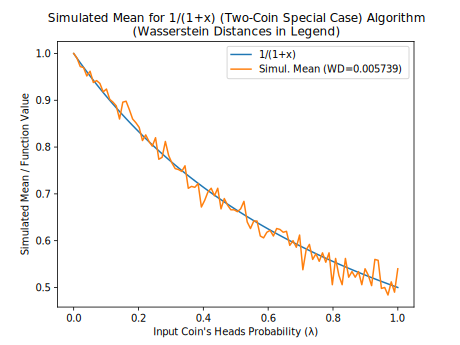 |  |
 |
| 1/(3+x) | 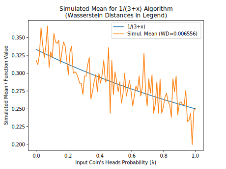 |  |
 |
| 1/(5+x) |  |
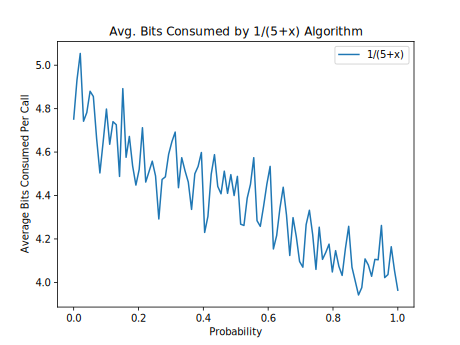 |  |
| 2014 Add. x+0.1 |  |
 |
 |
| 2014 Add. x+0.2 |  |
 |
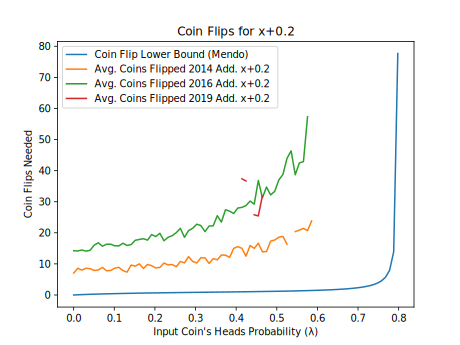 |
| 2014 Add. x+0.3 |  |
 |
 |
| 2014 Add. x+0.5 |  |
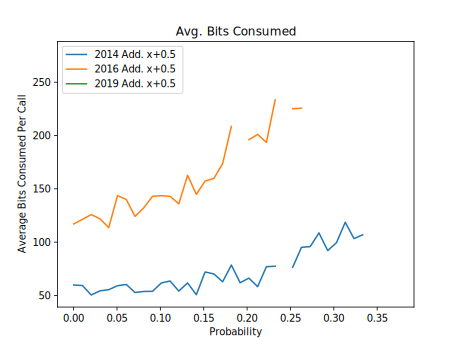 | 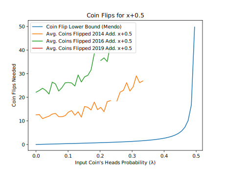 |
| 2014 Lin. x*1.3 |  |
 |
 |
| 2014 Lin. x*1.5 |  |
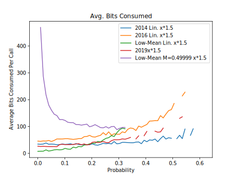 | 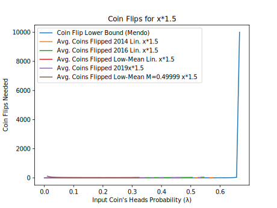 |
| 2014 Lin. x*2.0 |  |
 |
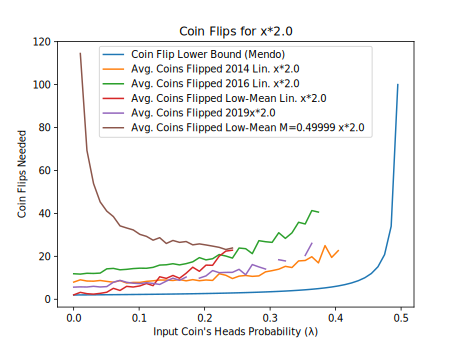 |
| 2014 Lin. x*4.0 | 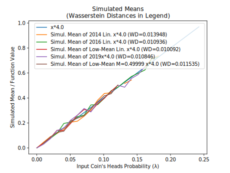 | 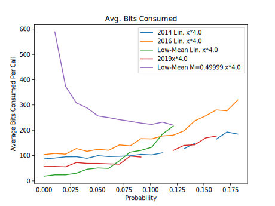 |  |
| 2014 Lin. x*6.0 |  |
 |
 |
| 2014 Lin. x*8.0 |  |
 |
 |
| 2014 Sub. x-0.1 |  |
 |
 |
| 2014 Sub. x-0.2 |  |
 |
 |
| 2014 Sub. x-0.3 |  |
 |
 |
| 2014 Sub. x-0.5 |  |
 |
 |
| arcsin(x)+sqrt(1-x*x)-1 | 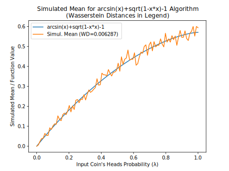 | 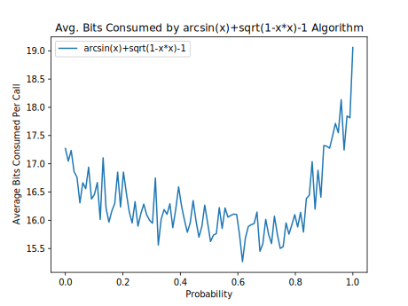 |  |
| arcsin(x)/2 | 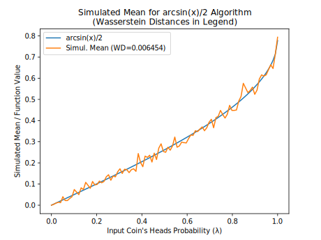 |  |
 |
| arctan(x) (Flajolet) |  |
 |
 |
| arctan(x) (Two-Coin Special Case) |  |
 |
 |
| exp(-x) (Alg. 2) |  |
 |
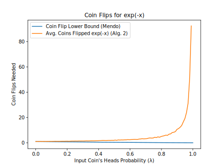 |
| exp(-x) (Alt. Series) |  |
 |
 |
| exp(-x) (Flajolet) |  |
 |
 |
| exp(x)*(1-x) |  |
 |
 |
| log(1+x) (Flajolet) |  |
 |
 |
| log(1+x) (Two-Coin Special Case) |  |
 |
 |
| pow(x,1/3) |  |
 |
 |
| pow(x,2/1) |  |
 |
 |
| pow(x,2/4) |  |
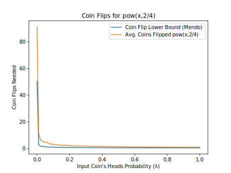 | |
| pow(x,3/4) |  |
 |
 |
| pow(x,4/5) |  |
 |
 |
| pow(x,5/1) |  |
 |
 |
| pow(x,5/4) | 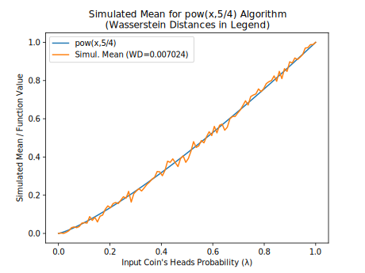 |  |
 |
| sqrt(x) |  |
 |
 |
Notes
(1) Flajolet, P., Pelletier, M., Soria, M., "On Buffon machines and numbers", arXiv:0906.5560v2 [math.PR], 2010.
(2) Keane, M. S., and O'Brien, G. L., "A Bernoulli factory", ACM Transactions on Modeling and Computer Simulation 4(2), 1994.
(3) Devroye, L., Non-Uniform Random Variate Generation, 1986.
(4) Nacu, Şerban, and Yuval Peres. "Fast simulation of new coins from old", The Annals of Applied Probability 15, no. 1A (2005): 93-115.
(5) Mendo, Luis. "An asymptotically optimal Bernoulli factory for certain functions that can be expressed as power series." Stochastic Processes and their Applications 129, no. 11 (2019): 4366-4384.
(6) von Neumann, J., "Various techniques used in connection with random digits", 1951.
(7) As used here and in the Flajolet paper, a geometric random number is the number of successes before the first failure, where the success probability is λ.
(8) The Flajolet paper describes what it calls the von Neumann schema, which, given a permutation class and an input coin, generates a random non-negative integer n with probability equal to (λn * V(n) / n!) / EGF(λ), where EGF(λ) = Σk = 0, 1, ... (λk * V(k) / k!), and V(n) is the number of valid permutations of size n. Here, EGF(λ) is the exponential generating function. Effectively, a geometric(λ) random number G is accepted with probability V(G)/G! (where G! is the number of possible permutations of size G, or 1 if G is 0), and rejected otherwise. The probability that r geometric random numbers are rejected this way is p*(1 − p)r, where p = (1 − λ) * EGF(λ).
(9) Łatuszyński, K., Kosmidis, I., Papaspiliopoulos, O., Roberts, G.O., "Simulating events of unknown probabilities via reverse time martingales", arXiv:0907.4018v2 [stat.CO], 2009/2011.
(10) Gonçalves, F. B., Łatuszyński, K. G., Roberts, G. O. (2017). Exact Monte Carlo likelihood-based inference for jump-diffusion processes.
(11) Another algorithm for this function uses the general martingale algorithm, but uses more bits on average as λ approaches 1. Here, the alternating series is 1 - x + x^2/2 - x^3/3 + ..., whose coefficients are 1, 1, 1/2, 1/3, ...
(12) Vats, D., Gonçalves, F. B., Łatuszyński, K. G., Roberts, G. O. Efficient Bernoulli factory MCMC for intractable likelihoods, arXiv:2004.07471v1 [stat.CO], 2020.
(13) Huber, M., "Optimal linear Bernoulli factories for small mean problems", arXiv:1507.00843v2 [math.PR], 2016
(14) Morina, G., Łatuszyński, K., et al., "From the Bernoulli Factory to a Dice Enterprise via Perfect Sampling of Markov Chains", arXiv:1912.09229v1 [math.PR], 2019.
(15) One of the only implementations I could find of this, if not the only, was a Haskell implementation.
(16) Huber, M., "Nearly optimal Bernoulli factories for linear functions", arXiv:1308.1562v2 [math.PR], 2014.
(17) Huber, M., "Optimal linear Bernoulli factories for small mean problems", arXiv:1507.00843v2 [math.PR], 2016.
(18) Huber, M., "Designing perfect simulation algorithms using local correctness", arXiv:1907.06748v1 [cs.DS], 2019.
(19) Lee, A., Doucet, A. and Łatuszyński, K., 2014. Perfect simulation using atomic regeneration with application to Sequential Monte Carlo, arXiv:1407.5770v1 [stat.CO].
(20) Canonne, C., Kamath, G., Steinke, T., "The Discrete Gaussian for Differential Privacy", arXiv:2004.00010v2 [cs.DS], 2020.
(21) Shaddin Dughmi, Jason D. Hartline, Robert Kleinberg, and Rad Niazadeh. 2017. Bernoulli Factories and Black-Box Reductions in Mechanism Design. In Proceedings of 49th Annual ACM SIGACT Symposium on the Theory of Computing, Montreal, Canada, June 2017 (STOC’17).
(22) Brassard, G., Devroye, L., Gravel, C., "Remote Sampling with Applications to General Entanglement Simulation", Entropy 2019(21)(92), doi:10.3390/e21010092.
(23) Devroye, L., Gravel, C., "Sampling with arbitrary precision", arXiv:1502.02539v5 [cs.IT], 2015.
Appendix
Convergence of Bernoulli Factories
The following Python code illustrates how to test a Bernoulli factory algorithm for convergence to the correct probability, as well as the speed of this convergence. In this case, we are testing the Bernoulli factory algorithm of xy/z, where x is in the interval (0, 1) and y/z is greater than 0. Depending on the parameters x, y, and z, this Bernoulli factory converges faster or slower.
# Parameters for the Bernoulli factory x**(y/z) x=0.005 # x is the input coin's probability of heads y=2 z=3 # Print the desired probability print(x**(y/z)) passp = 0 failp = 0 # Set cumulative probability to 1 cumu = 1 iters=4000 for i in range(iters): # With probability x, the algorithm returns 1 (heads) prob=(x);prob*=cumu; passp+=prob; cumu-=prob # With probability (y/(z*(i+1))), the algorithm returns 0 (tails) prob=(y/(z*(i+1)));prob*=cumu; failp+=prob; cumu-=prob # Output the current probability in this iteration, # but only for the first 30 and last 30 iterations if i<30 or i>=iters-30: print(passp)
As this code shows, as x (the probability of heads of the input coin) approaches 0, the convergence rate gets slower and slower, even though the probability will eventually converge to the correct one. In fact, when y/z is less than 1:
- The average number of coin flips needed by this algorithm will grow without bound as x approaches 0, and Mendo (2019)(5) showed that this is a lower bound; that is, no Bernoulli factory algorithm can do much better without knowing more information on x.
- xy/z has a slope that tends to a vertical slope near 0, so that the so-called Lipschitz condition is not met at 0. And (Nacu and Peres 2005, propositions 10 and 23)(4) showed that the Lipschitz condition is necessary for a Bernoulli factory to have an upper bound on the average running time.
Thus, a practical implementation of this algorithm may have to switch to an alternative implementation (such as the one described in the next section) when it detects that the geometric bag's first few digits are zeros.
Alternative Implementation of Bernoulli Factories
Say we have a Bernoulli factory algorithm that takes a coin with probability of heads of p and outputs 1 with probability f(p). If this algorithm takes a geometric bag (a partially-sampled uniform random number or PSRN) as the input coin and flips that coin using SampleGeometricBag, the algorithm could instead be implemented as follows in order to return 1 with probability f(U), where U is the number represented by the geometric bag (see also (Brassard et al., 2019)(22), (Devroye 1986, p. 431)(3), (Devroye and Gravel 2015)(23):
- Set v to 0 and k to 1.
- Set v to b * v + d, where b is the base (or radix) of the geometric bag's digits, and d is a digit chosen uniformly at random.
- Calculate an approximation of f(U) as follows:
- Set n to the number of items (sampled and unsampled digits) in the geometric bag.
- Of the first n items in the geometric bag, sample each of the unsampled digits uniformly at random. Then let uk be the geometric bag's digit expansion up to the first n digits after the point.
- Calculate the lowest and highest values of f in the interval [uk, uk + b−n], call them fmin and fmax. If abs(fmin - fmax) <= 2 * b−k, calculate (fmax + fmin) / 2 as the approximation. Otherwise, add 1 to n and go to the previous substep.
- Let pk be the approximation's digit expansion up to the k digits after the point. For example, if f(U) is π and k is 2, pk is 314.
- If pk + 1 <= v, return 0. If pk − 2 >= v, return 1. If neither is the case, add 1 to k and go to step 2.
However, the focus of this article is on algorithms that don't rely on calculations of irrational numbers, which is why this section is in the appendix.
License
Any copyright to this page is released to the Public Domain. In case this is not possible, this page is also licensed under Creative Commons Zero.